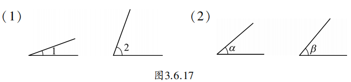
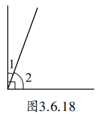
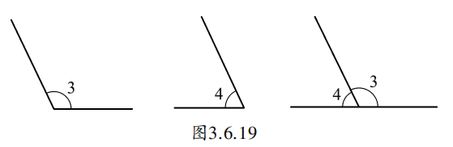
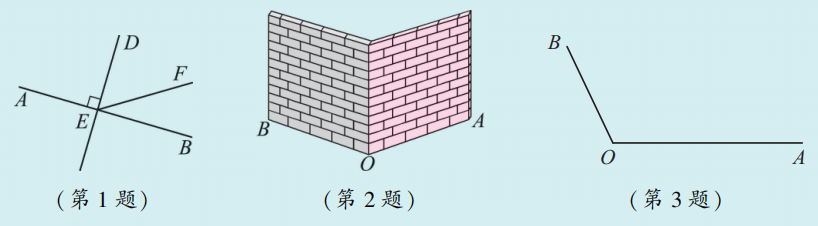

在我们所用的一副三角尺中，每块都有一个角是 \(90^{\circ}\)，而其他两个角，一块是 \(30^{\circ}\) 与 \(60^{\circ}\)，另一块都是 \(45^{\circ}\)，它们的和都是 \(90^{\circ}\)。
在图3.6.17中，用量角器量一量两组图中各角的大小，发现也有这样的特殊关系。

两个角的和等于 \(90^{\circ}\)（直角），就说这两个角互为余角（complementary angle），简称互余。
例如，如果 \(\angle 1 + \angle 2 = 90^{\circ}\)，那么 \(\angle 1\) 是 \(\angle 2\) 的余角， \(\angle 2\) 也是 \(\angle 1\) 的余角。反过来，如果两个角互余，那么把这两个角如图3.6.18那样拼在一起的话，就构成一个直角。

同样，如果两个角的和等于 \(180^{\circ}\)（平角），就说这两个角互为补角（supplementary angle），简称互补。如图3.6.19， \(\angle 3 + \angle 4 = 180^{\circ}\)，所以 \(\angle 3\) 、 \(\angle 4\) 互为补角。

想想看，如果 \(\angle 1\) 与 \(\angle 2\) 互余， \(\angle 3\) 与 \(\angle 4\) 互余， \(\angle 2 = \angle 4\) ，那么 \(\angle 1\) 与 \(\angle 3\) 有什么关系？相等角的补角又有什么关系？
\(\angle 1 = \angle 3\)（等角的余角相等）；两个相等角的补角也相等。
由此可得性质：同角或等角的余角相等；同角或等角的补角相等。
已知 \(\angle \alpha = 50^{\circ}17^{\prime}\) ，求 \(\angle \alpha\) 的余角和补角。
\(\angle \alpha\) 的余角 \(= 90^{\circ} - 50^{\circ}17^{\prime} = 39^{\circ}43^{\prime}\)
\(\angle \alpha\) 的补角 \(= 180^{\circ} - 50^{\circ}17^{\prime} = 129^{\circ}43^{\prime}\)
1. 说出图中互余和互补的角。

2. 如图，有两堵围墙，有人想测量地面上所形成的 \(\angle AOB\) 的度数，但人又不能进入围墙，只能站在墙外，请问该如何测量？
3. 如图，已知 \(\angle AOB\) ，利用尺规作图作一个角等于该角的补角。
抽象思想： 从具体图形中抽象出“互余”“互补”的数量关系。
转化思想： 将角的计算问题转化为代数运算（加减法）。
模型思想： 余角、补角是几何中的基本数量模型，广泛应用于几何证明和实际问题。
你知道吗？余角和补角在我们的生活中随处可见！
🌳 植树中的数学：当我们把小树苗扶正时，歪斜的树苗和地面形成一个角，而树苗应该垂直于地面，这两个角的和正好是90°——它们互余！
🛠️ 工具中的学问：工人用铁锹挖地时，铁锹与地面形成的两个角刚好拼成一个平角（180°），这两个角就是互补的关系。
🧩 折纸游戏：拿一张长方形纸，随意折一下，展开后你会发现很多余角和补角。比如把一个角折起来，折痕两边的小角往往互余。
原来数学就在我们身边，只要留心观察，处处都能发现余角和补角的身影！
✨ 从具体到抽象，用数学的眼光看世界 ✨